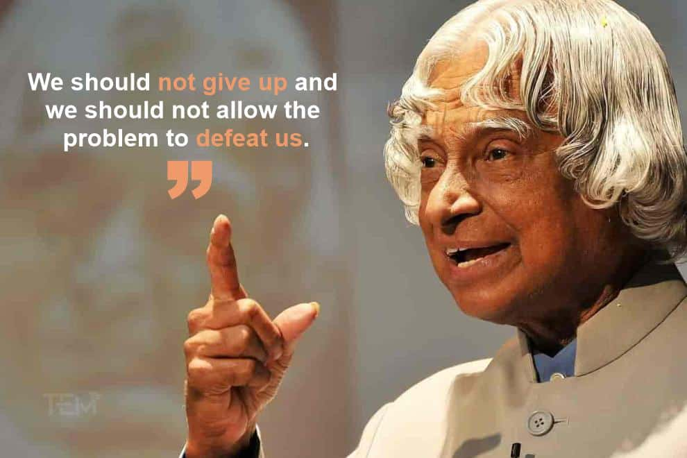
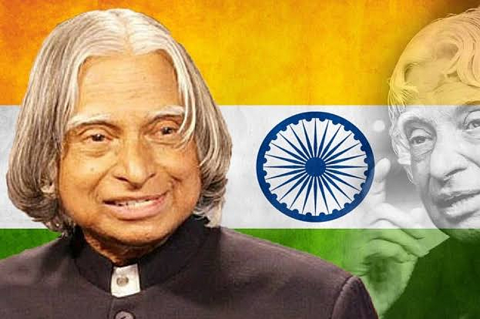
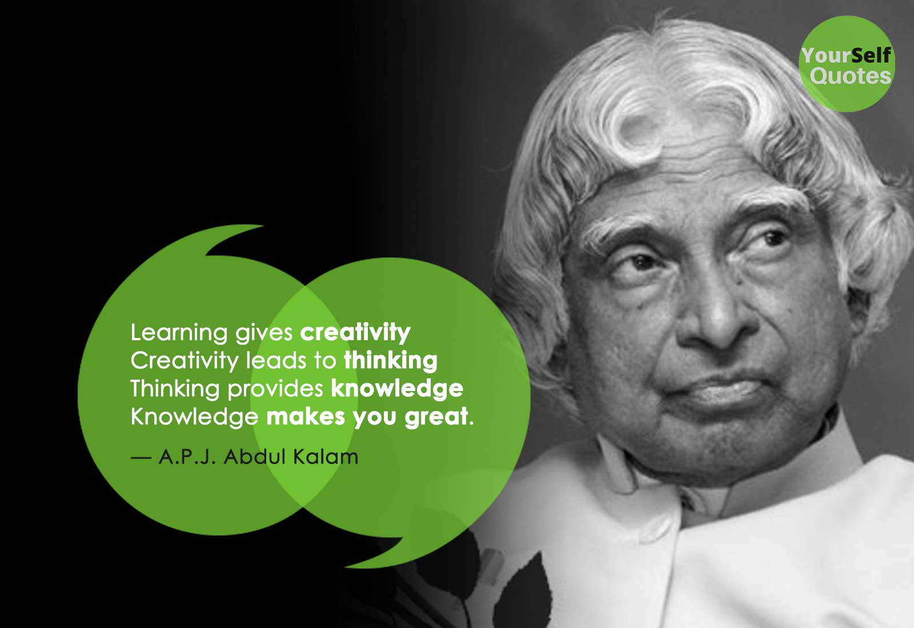
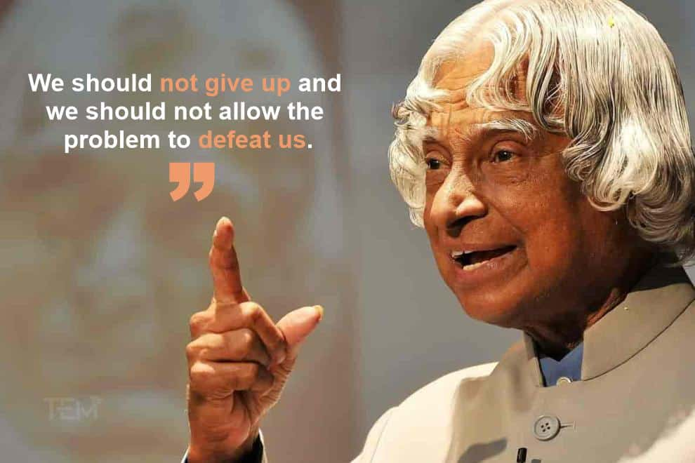
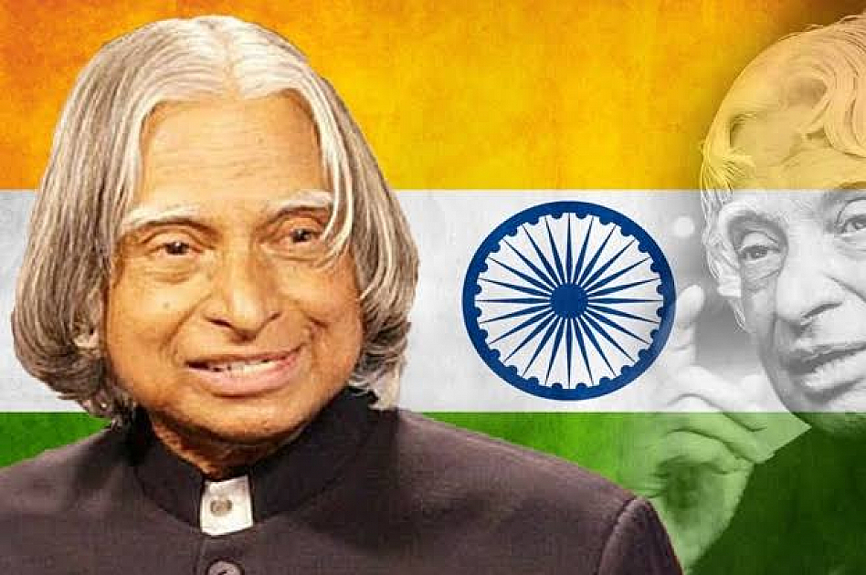
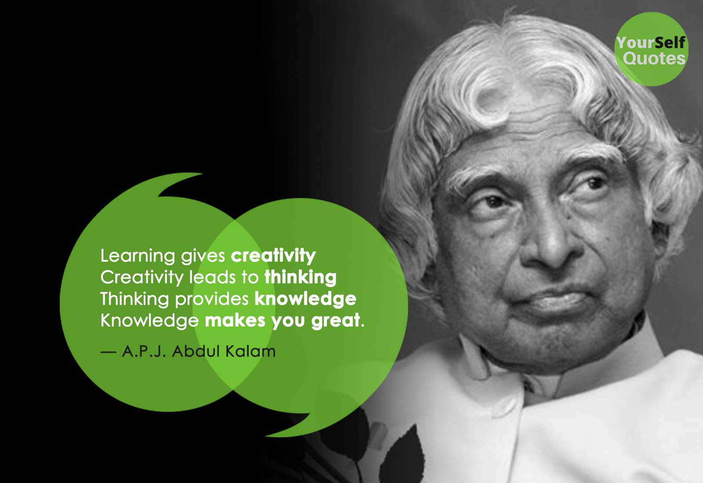

Abdul Kalam, in full Avul Pakir Jainulabdeen Abdul Kalam, Indian scientist and politician who played a leading role in the development of India's missile and nuclear weapons programs. He was president of India from 2002 to 2007. The Missile Man of India for his work on the development of ballistic missile and launch vehicle technology. The undisputed father of India's missile programme was Dr. A.P.J. Abdul Kalam. He has given the Agni and Prithvi ballistic missiles new life, putting China and Pakistan well within India's missile range. APJ Abdul Kalam has contributed in different sectors of science and technology in the country. During his working period he worked with 2 significant space research organizations. The first one was DRDO - Defense research and development organization and the second one is ISRO- Indian space research organization.